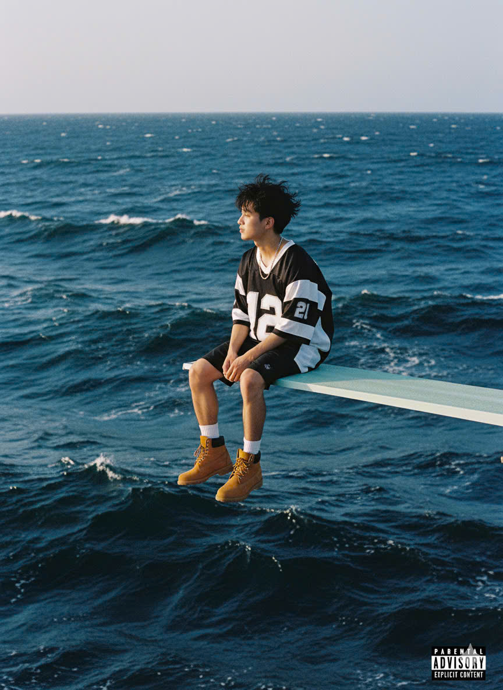

TWICE
Interaction & Development
2024
The combination of my passion for design, code & interaction positions me in a unique place in the web design world.
Creating digital products from scratch is a team effort. Each of the specialists can bring something new to the project, but they must all work as a single mechanism. Well-established processes and a well-coordinated team are the main keys to success.